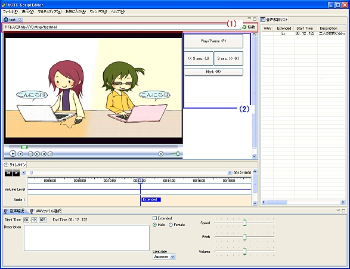

以降の説明では、Windows Media Video(WMV)ファイルを対象に、HTMLファイル内に動画を配置した上でEASELに表示させ、音声ガイドを作成する方法を説明します。それ以外の動画ファイルに関しては、変換ツールなどを用いてWMVに変換するか、各フォーマットのHTMLへの埋め込み方法のガイドなどを参考にHTML内に配置した上で EASELで読み込んでください。
（Windows Media Player, QuickTime, RealPlayer等での動作実績があります。）
テンプレートファイルの入手
以下のリンクを右クリックし、表示されるメニューからファイルを作業フォルダに保存（IEの場合は「対象をファイルに保存」メニューを選択）してください。
HTMLファイルのテンプレート
なお、右クリックの代わりにメニューキー（図１参照）の押下、もしくはShift+F10を押下することでもメニューが表示できます。
図１：キーボード上のメニューキーの例
HTMLファイル作成手順
- 作業フォルダに保存したテンプレートのHTMLファイルをコピーし、適切な名前に変更してください。以降では、c:\tmpという作業フォルダの中で、test.htmlという名前に変更したとして説明を行います。また、対象となる動画ファイルはtest.wmvという名前で、作業PC上のc:\contents\にあるとします。
- 1.でコピーしたテンプレートファイル（test.html）をノートパッドなどのエディタで開いてください。
- テンプレートファイル内には、説明がコメントタグの中（<!-- で始まり -->で終わっている部分）に書かれていますので、必要に応じて確認してください。
- テンプレートファイルの13行目の途中にある、 value="C:\TEST\001.wmv" の ファイルパス（C:\TEST\001.wmv）の部分を、動画ファイルのおいてある場所に書き換えてください。
今回の例では
<param name="FileName" value="C:\TEST\001.wmv">
の部分を
<param name="FileName" value="C:\contents\test.wmv">
に書き換えます。
- 書き換えが終了したら、ファイルを保存して下さい。
- 保存したHTMLファイルをInternet Explorerで開き、動画が表示されるか、動画のサイズ等が適切かを確認してください。
サイズを調整したい場合は、12行目の一番最後にあるwidthとheightの値を適宜調整してください。その他のパラメータについても、コメント内の説明を参考に、必要に応じて適宜調整してください。
HTMLファイル使用手順
- 上記の手順で作成したHTMLファイルを、EASELの動画再生用のブラウザに表示させます。
方法は、図２の
(1)のEASELのアドレス入力部分にファイルの場所を記述して「移動」するか、ブラウザ部分にHTMLファイルをドラッグ＆ドロップするかのいずれかになります。
- テンプレートファイル内に配置されたボタン（図２の(2)の部分）を用いることで、下記の操作を実行できます。
- Play/Pause ボタン ・・・ 押下するたびに再生と停止が切り替わります。
- << 3sec ボタン ・・・ ３秒分動画を戻します。
- 3sec >> ボタン ・・・ ３秒分動画を進めます。
- Mark ボタン ・・・ Markをしたタイミングで、そのときの時間がMarkボタンの下のリスト中に
記録されていきます。リスト内の時間をクリックするとMarkされた時間に移動できます。

図２：EASEL にHTMLファイルを読み込ませた図